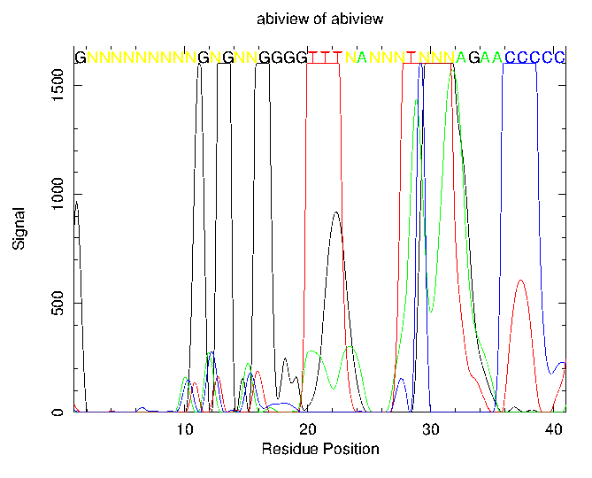

|
|
abiview |
The data for each nucleotide is plotted and the assigned nucleotide (G, A, T, C or N) in the ABI file is overlayed on the graphs.
It also writes out the sequence to an output sequence file.
% abiview -graph cps Reads ABI file and display the trace Input file: ../../data/abiview.abi Output sequence [abiview.fasta]: Created abiview.ps |
Go to the input files for this example
Go to the output files for this example
Mandatory qualifiers:
[-fname] infile Name of the ABI trace file
[-outseq] seqout Sequence file
-graph xygraph Graph type
Optional qualifiers:
-startbase integer First base to report or display
-endbase integer Last sequence base to report or display. If
the default is set to zero then the value of
this is taken as the maximum number of
bases.
-yticks boolean Display y-axis ticks
-[no]sequence boolean Display the sequence on the graph
-window integer Sequence display window size
-bases string Base graphs to be displayed
Advanced qualifiers:
-separate boolean Separate the trace graphs for the 4 bases
General qualifiers:
-help boolean Report command line options. More
information on associated and general
qualifiers can be found with -help -verbose
|
| Mandatory qualifiers | Allowed values | Default | |
|---|---|---|---|
| [-fname] (Parameter 1) |
Name of the ABI trace file | Input file | Required |
| [-outseq] (Parameter 2) |
Sequence file | Writeable sequence | <sequence>.format |
| -graph | Graph type | EMBOSS has a list of known devices, including postscript, ps, hpgl, hp7470, hp7580, meta, colourps, cps, xwindows, x11, tektronics, tekt, tek4107t, tek, none, null, text, data, xterm, png | EMBOSS_GRAPHICS value, or x11 |
| Optional qualifiers | Allowed values | Default | |
| -startbase | First base to report or display | Integer 0 or more | 0 |
| -endbase | Last sequence base to report or display. If the default is set to zero then the value of this is taken as the maximum number of bases. | Any integer value | 0 |
| -yticks | Display y-axis ticks | Boolean value Yes/No | No |
| -[no]sequence | Display the sequence on the graph | Boolean value Yes/No | Yes |
| -window | Sequence display window size | Any integer value | 40 |
| -bases | Base graphs to be displayed | Any string is accepted | GATC |
| Advanced qualifiers | Allowed values | Default | |
| -separate | Separate the trace graphs for the 4 bases | Boolean value Yes/No | No |
This file contains non-printing characters and so cannot be displayed here.
This file contains non-printing characters and so cannot be displayed here.
>../../data/abiview.abi GNNNNNNNNNGNGNNGGGGTTTNANNNTNNNAGAACCCCCCTTNGAAAANNNCCACCCCA NNATAGTNGTANGAATAGTNCCCAGGCCANGCCTATCTGTGATGATTACATAGGCTAACA CATGACAAACATTTAAAAACACTAAACAATTGTTATTTATTCTTTGTTCCTATAAACCAC ACCCATTAAGCCCTTACTATATATAAGAGTTTTCAAGCCAAGAACCTGCTGCTTGGGAGG CTGATGCAGGAGAATTGCCAAGTACAAACCCTGCCTGGACTGTAAAGTGAAACCAAGGCT AGTTGTCTCACAATAAAAGATGAAGGGCAAGTGGGATCAATGCATAAAGGAGCTTGTGCC CAAGCCTGTTAGCCTTAGTTCAATTCCTGAGTACCATGAAAAGGTAGAAGGAGAGAAATG ATTTGGTACAATTTTTCTCTGTGCTGTGACACAGTACCACCCTCCTACTAATAACAAATA AAATAATGTTTAAAACAAAATAAAATAAAAATGGACTGGGATGTAGCACAATGGTAGGGT ACTTGCATAGCATGTACAAGGACCTGATTTCAATCCCCTGTGATAAAAGAAAATAAGGAA GGGAGGAAGCGTTAGGAGGAAAAATGGAATACAGAAGACACAGTGCATGGGAAGGATATG TATGTTATGAACACCAGAAATTCACTTGAAAATGAGTAAAATTTTTTTATTATTATATCA TTATTATTGGGGGGGATGTGGGCGGGGCTTGCAGAGGTATCTTTTAGAGGANGATCATTT TCCGGTTGTTGAGCAGGGCTCTGTTATGTAGGATATCTCAGANTAACAGACCCCAGGT |

The horizontal scale of the output image labelled 'Residue Position' is only a very approximate indication of the spacing of residues in the image. The real residue spacing is variable, as it relies on the speed with which the oligo-nucleotides are eluted in the ABI sequencer. Do not be surprised to see the nucleotide signals spaced at a much greater distance than the horizontal scale might suggest.
| Program name | Description |
|---|---|
| cirdna | Draws circular maps of DNA constructs |
| lindna | Draws linear maps of DNA constructs |
| pepnet | Displays proteins as a helical net |
| pepwheel | Shows protein sequences as helices |
| prettyplot | Displays aligned sequences, with colouring and boxing |
| prettyseq | Output sequence with translated ranges |
| remap | Display a sequence with restriction cut sites, translation etc |
| seealso | Finds programs sharing group names |
| showalign | Displays a multiple sequence alignment |
| showdb | Displays information on the currently available databases |
| showfeat | Show features of a sequence |
| showseq | Display a sequence with features, translation etc |
| sixpack | Display a DNA sequence with 6-frame translation and ORFs |
| textsearch | Search sequence documentation text. SRS and Entrez are faster! |